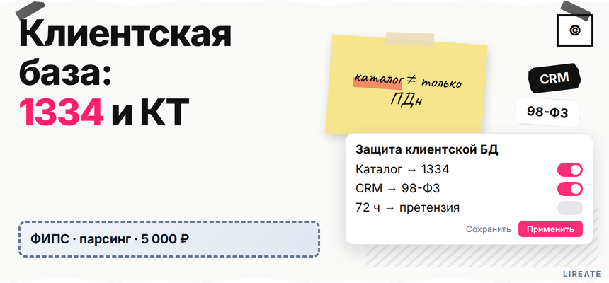
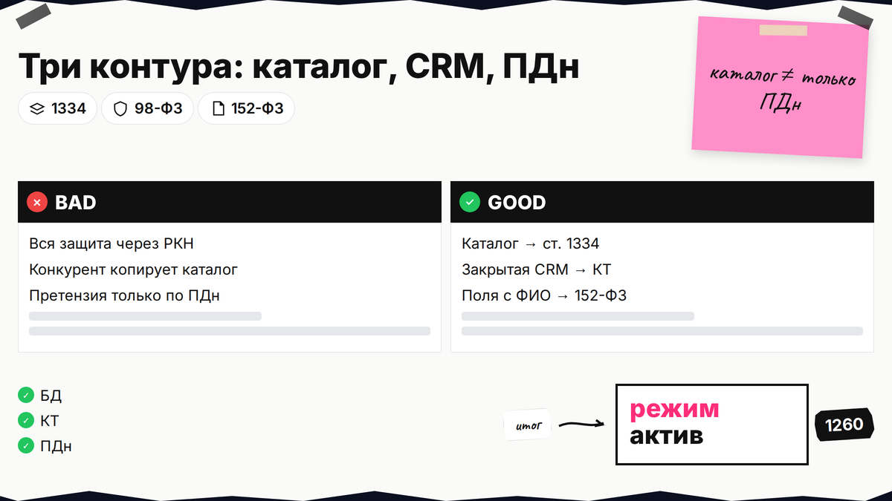
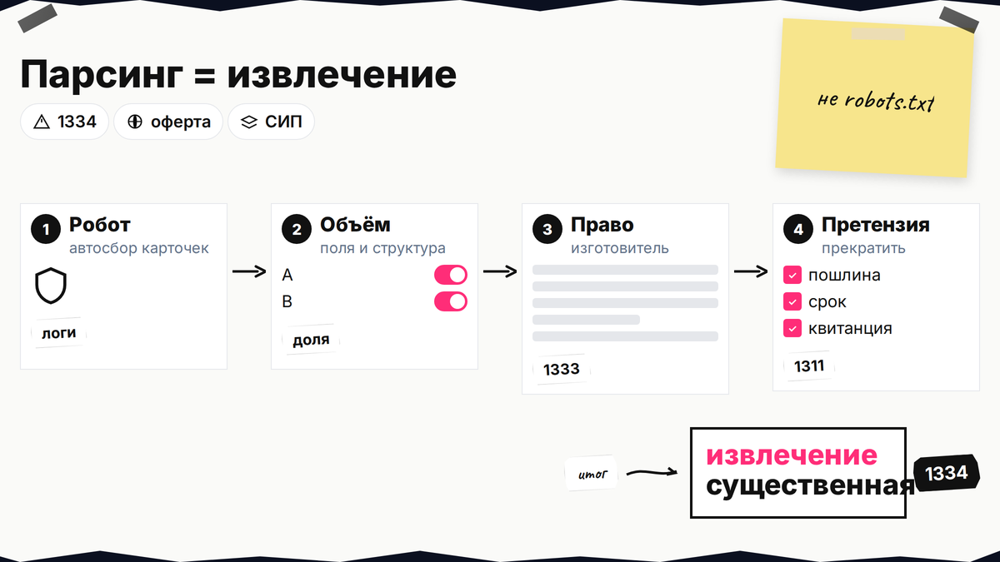
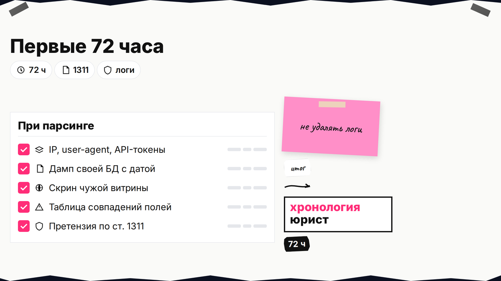

Конкурент снимает каталог роботом, менеджер унёс CRM в Excel, а в поиске - только штрафы РКН. Спор про защиту клиентской базы данных и парсинг каталога идёт по ГК РФ: изготовитель, коммерческая тайна, договоры. Ниже мы в Лирейт даём маршрут для владельца CRM и сайта до утечки и на первые 72 часа после парсинга; нормы на 18.11.2026, не индивидуальная консультация.

TL;DR / Быстрый инсайт: Публичный каталог и CRM - это база данных по ст. 1260 ГК РФ; изготовитель (ст. 1333) может требовать прекращения извлечения существенной части (ст. 1334) - сюда же относится типичный парсинг. Закрытые выгрузки и сегменты CRM закрывают 98-ФЗ (режим коммерческой тайны). Делайте: разделить активы (БД / ПДн / КТ), зафиксировать изготовителя, запретить массовый экспорт, описать запрет автосбора в оферте. Не делайте: путать 152-ФЗ со ст. 1334 и ждать, что один robots.txt остановит суд.
Парсинг - автосбор страниц роботом; в ГК РФ это чаще извлечение базы данных, а не отдельный "запрет интернета". CRM (учёт клиентов) с полями и историей - тоже БД по ст. 1260, если записи систематизированы для ЭВМ. Регистрацию и доказательства для суда разбираем в L23; здесь - клиентская база, каталог и конкурентный робот.

Делайте: для каждого актива выпишите один главный режим и второй вспомогательный. Не делайте: строить всю стратегию только вокруг compliance по персональным данным, если конкурент копирует именно структуру каталога или прайс.
| Что у вас на руках | Первый правовой контур | Типичная ошибка |
|---|---|---|
| Публичный каталог на сайте, API витрины, маркетплейс-фид | Смежное право изготовителя: ст. 1260, 1333-1334 (извлечение существенной части) | Считать, что "раз лежит в сети, копировать можно" |
| Закрытая CRM: сегменты, маржа, закупочные цены, внутренняя аналитика | Коммерческая тайна по ст. 10 98-ФЗ (подробный ввод режима - L14) | NDA без перечня КТ и без учёта доступов |
| ФИО, телефоны, адреса клиентов в полях CRM | ст. 19 152-ФЗ (меры от неправомерного доступа и копирования) | Подменять спор о каталоге штрафами РКН в претензии к конкуренту |
По ст. 1333 ГК РФ изготовитель - тот, кто организовал создание базы: сбор, обработку и расположение материалов. Если каталог наполняли подрядчик и SaaS-вендор, права нужно закрепить в договоре - иначе в споре всплывёт чужое лицо (алгоритм договоров - в L23).
Исключительное право на извлечение и дальнейшее использование возникает, если создание потребовало существенных затрат; закон презюмирует их при 10 000 и более самостоятельных элементах (п. 1 ст. 1334). Делайте: сохранить договоры с копирайтерами, логи импорта, счета за наполнение. Не делайте: рассчитывать на защиту "голого" списка из двух колонок без доказуемых затрат и систематизации.

Извлечение - перенос всего содержания или существенной части на другой носитель любыми техническими средствами (п. 1 ст. 1334). Массовая выгрузка карточек с артикулами, ценами, остатками и фото в чужой маркетплейс обычно ближе к этой категории, чем единичный просмотр страницы покупателем.
По п. 3 ст. 1335.1 несущественную часть иногда можно, но повторный сбор может быть запрещён. Дело А56-128791/2022 (Gardium): публичность не снимает смежное право; важны объём и структура выгрузки.
Делайте: в пользовательском соглашении и оферте прописать запрет автоматизированного сбора и копирования существенной части каталога. Не делайте: считать файл robots.txt федеральным запретом: для суда это скорее договорная/техническая оговорка, а не отдельная норма.
То, что не должно светиться на сайте - выгрузки LTV, закупки, индивидуальные скидки, черновые сегменты - разумно вести как коммерческую тайну. Пять мер ст. 10 98-ФЗ: перечень, ограничение доступа, учёт лиц, договоры, маркировка "Коммерческая тайна". Мы в Лирейт разбираем ввод режима пошагово в гайде по коммерческой тайне.
Делайте: запретить массовый экспорт CRM ролям "менеджер" и "аналитик", оставить его только у ограниченного круга с журналом выгрузок. Не делайте: объявлять всю CRM тайной без перечня конкретных сведений - режим труднее доказать.
Скрипт витрины - отдельная программа для ЭВМ (L32); CRM в приложении - см. L20. Делайте: rate limit, captcha, логи IP, дампы с датой. Не делайте: считать технику заменой претензии по ст. 1334.
Схема профилактики:
Разделить активы (БД / КТ / ПДн) → изготовитель в договорах → оферта против автосбора → режим КТ для CRM → ограничить экспорт → логи и дампы с датой → решение о регистрации в Роспатенте (опционально)
По п. 3 ст. 1334 регистрация не обязательна для возникновения права, но свидетельство фиксирует объект и дату для суда. Добровольная подача по ст. 1262: депозит, реферат, 5 000 ₽ пошлина (ст. 333.30 НК РФ), срок услуги 62 рабочих дня (подача через ЕПГУ, услуга Роспатента).
Делайте: подавать до спора, если каталог - ядро выручки. Не делайте: считать реестр технической блокировкой парсинга; детальный порядок заявки и претензии - в L23, здесь только решение "нужно / не нужно сейчас".

Делайте: одну хронологию для юриста и IT. Не делайте: удалять логи "чтобы не пугать клиентов" - без них доказать извлечение сложнее.
Сохраните карту активов и ответственного за оферту и экспорт CRM. Опишите задачу в Telegram Лирейт - подскажем следующий документальный шаг без обещания исхода спора. Подробный пакет по БД - в L23.
Материал проверен: редакция Лирейт, практика споров о базах данных, парсинге каталогов и утечках из CRM.
Достоверность данных: ст. 1260, 1333-1335.1, 1262, 1311 ГК РФ, ст. 10 98-ФЗ, ст. 19 152-ФЗ, пошлина 5 000 ₽ и срок 62 рабочих дня сверены с КонсультантПлюс, ГАРАНТ и rospatent.gov.ru на ноябрь 2026 года; кейс СИП - по открытому обзору Gardium.
Часто слабо без систематизации и затрат. Для закрытого списка - 98-ФЗ и 152-ФЗ для ПДн; для сайта - ст. 1334 с доказательствами извлечения.
Покупатель листает страницы; парсер массово извлекает поля в свой носитель. Суд оценивает объём, структуру и автоматизацию, а не намерение "мы исследовали рынок".
Повторное извлечение по 1335.1 может быть запрещено, если совокупный ущерб бьёт по бизнесу изготовителя.
Не всегда: для закрытой клиентской аналитики чаще важнее КТ и договоры. Регистрация БД имеет смысл для крупного справочника или каталога с затратами; порядок - в L23.
Когда украли и структуру базы, и закрытые метрики из CRM. КТ не заменяет смежное право на публичный каталог, но дополняет спор по внутренним выгрузкам (L14).
Отозвать доступы, зафиксировать объём, проверить КТ и договор, направить претензию; при ПДн - параллельный регламент по 152-ФЗ.
Нет как безусловный вывод: публичность не снимает смежное право автоматически (практика СИП по скрапингу). Спор идёт про извлечение существенной части, а не про индексацию в Яндексе или Google.